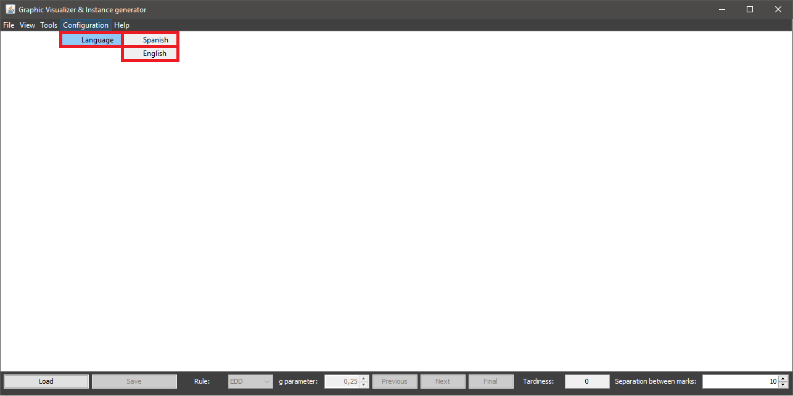

To change application language there's no specific condition required and it can be done by the menu option Configuration > Language, and then selecting one of the avaliable languages. Language change affects all windows opened at that moment.
It's important to highlight that changing the application language will reset any current manual scheduling.